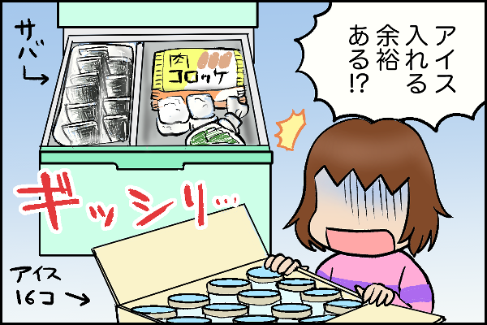
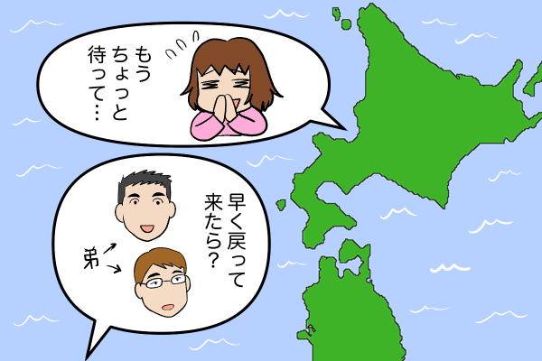
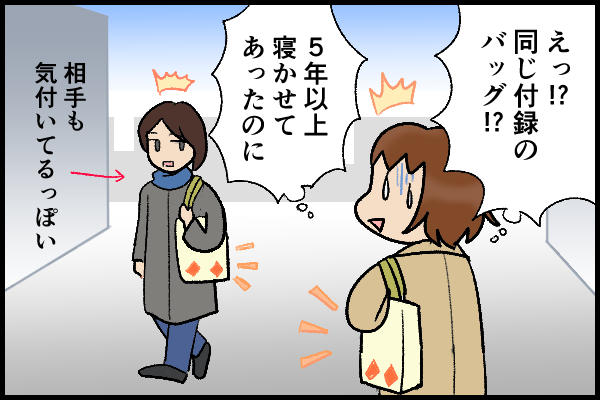
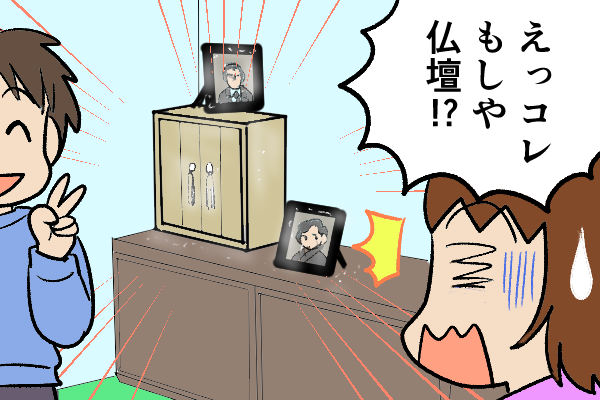
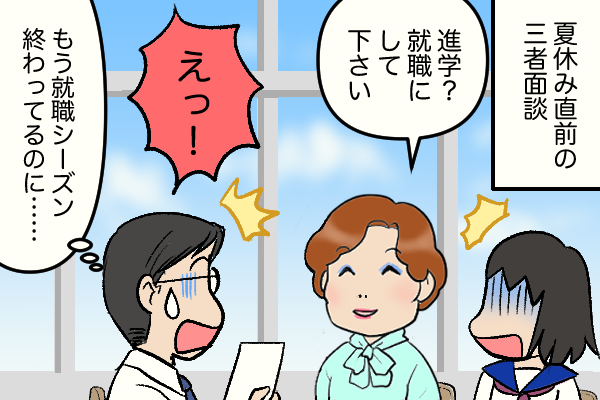
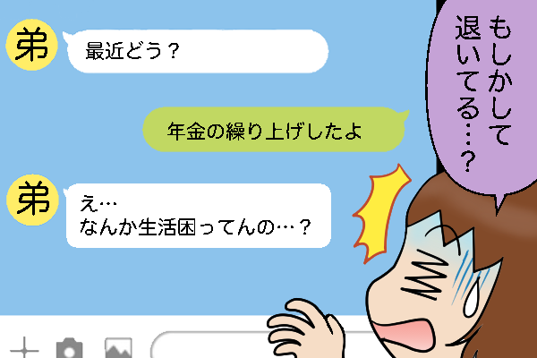
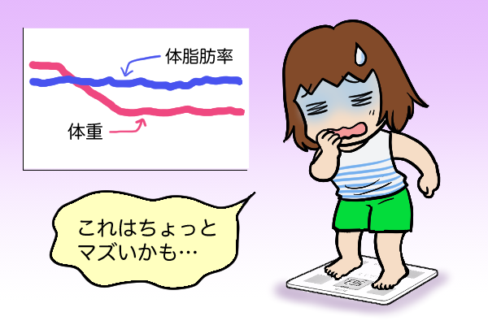

含有关键字“Kurupita”的文章
1-
 每个人的经历 发布日期：
每个人的经历 发布日期：行李箱里有大量纸板……公寓清洁工看到的“未打开的盒子”……
-
 每个人的经历 发布日期：
每个人的经历 发布日期：这座城市的房产有很多东西可以提供！？一个陌生人对访客大喊：“把你丈夫赶出去！”……
-
 每个人的经历 发布日期：
每个人的经历 发布日期：【家庭经济困难】自从我们关系亲密，我们就知道“口头承诺”是禁忌……
-
 每个人的经历 发布日期：
每个人的经历 发布日期：您是负责监督家电安装人员的吗？不看吗？一次事件改变了我的想法...
-

每个人的经历 发布日期：本来很划算，但是后悔了……买了一大堆冷冻品，心里慌了！ /...
-

每个人的经历 发布日期：即使离婚后，我仍然住在前夫的家乡。你想住的地方和你应该住的地方......
-

每个人的经历 发布日期：我喜欢杂志补充袋。轻便、便宜、时尚！但问题是...
-

每个人的经历 发布日期：被父母家布满灰尘的佛坛震惊了！但我没有权利批评接班的弟弟……
-

每个人的经历 发布日期：一个对家人暴力的父亲和一个疏忽大意的母亲。我是由两个有毒的父母抚养长大的...
-

每个人的经历 发布日期：你提前领取的养老金将支撑你重要的生活。然而，一位亲戚表示，“出乎意料的反应……”
-

每个人的经历 发布日期：“16小时减肥法”减重10公斤！然而，我的身体却感觉“不舒服”……